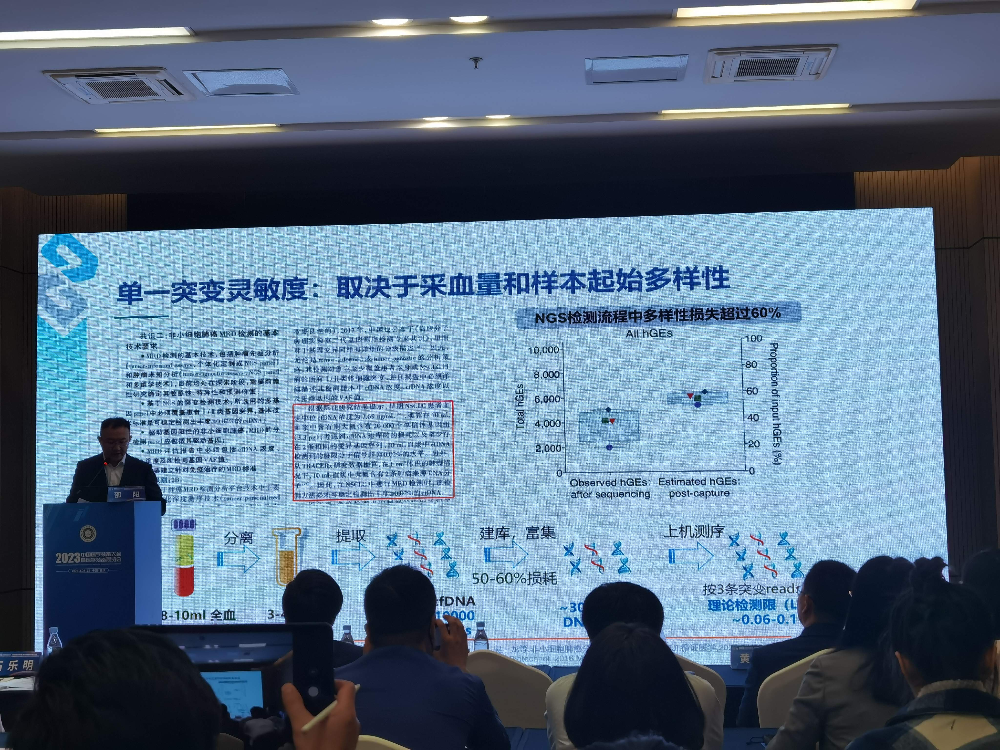
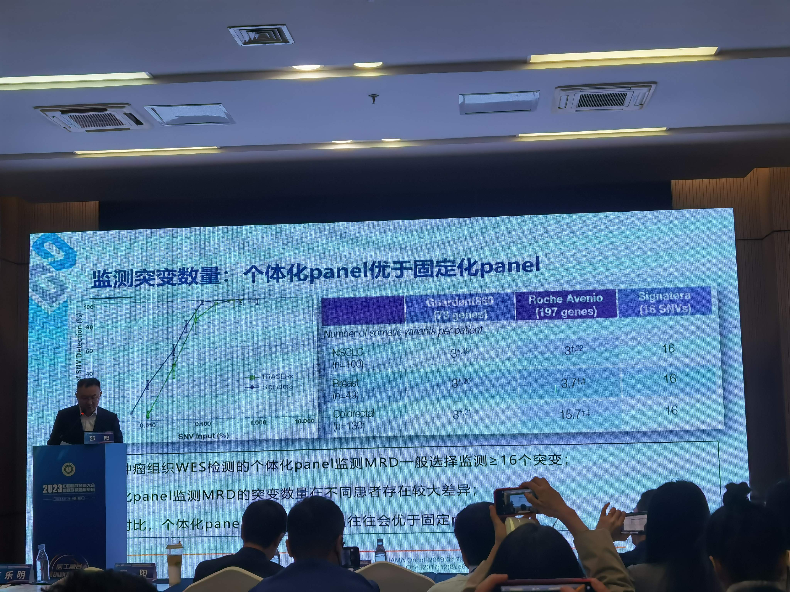
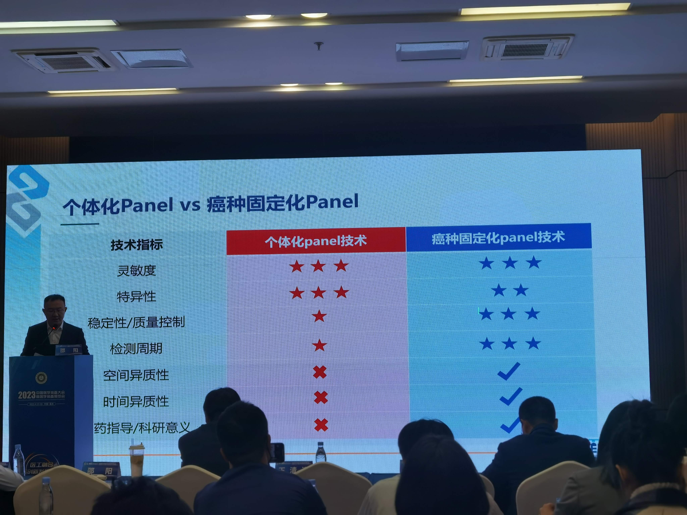
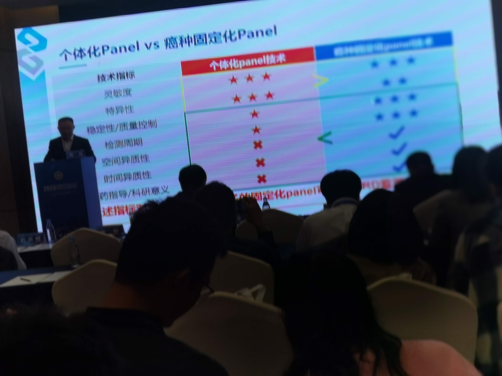
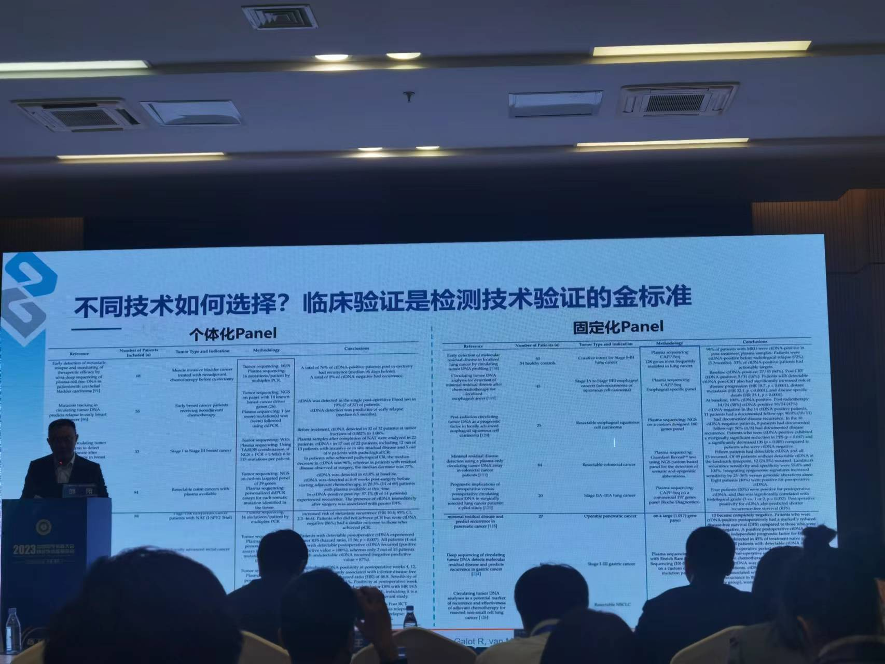
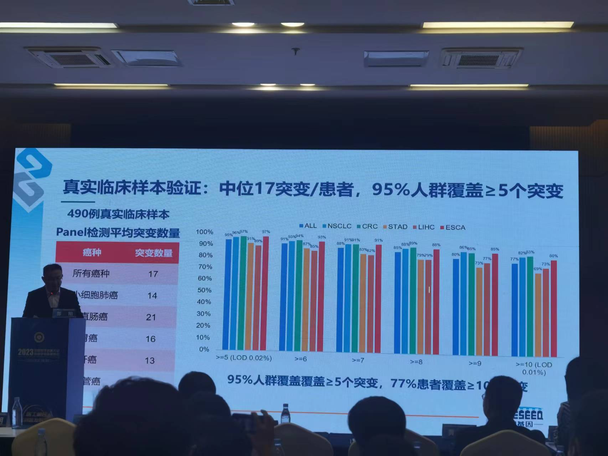
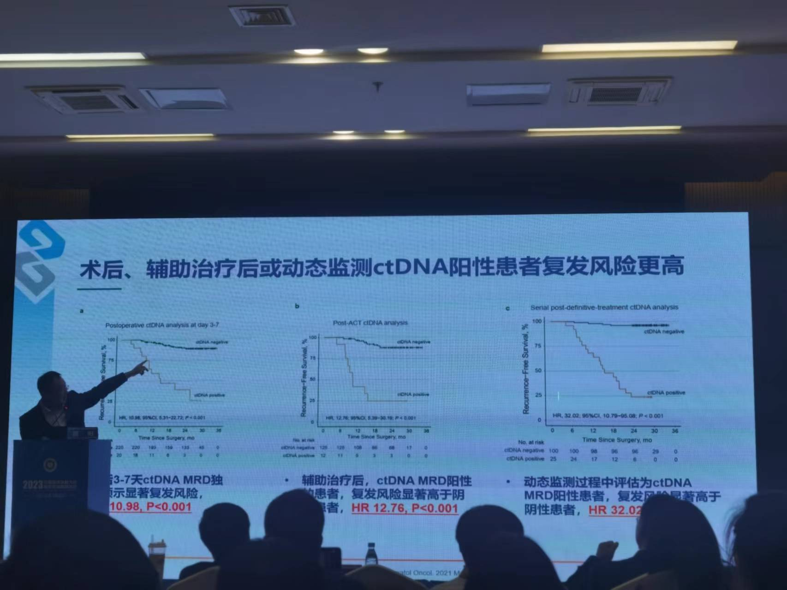
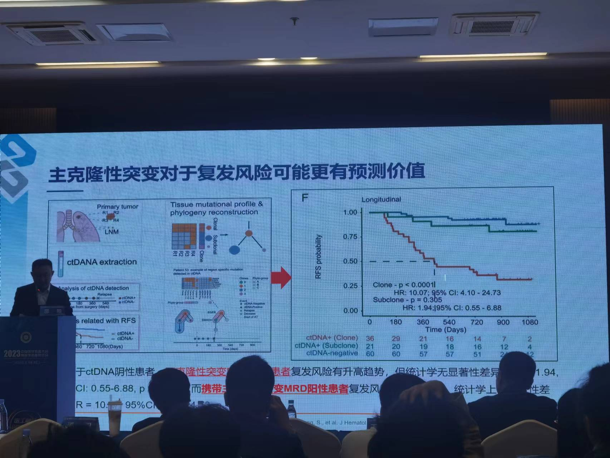
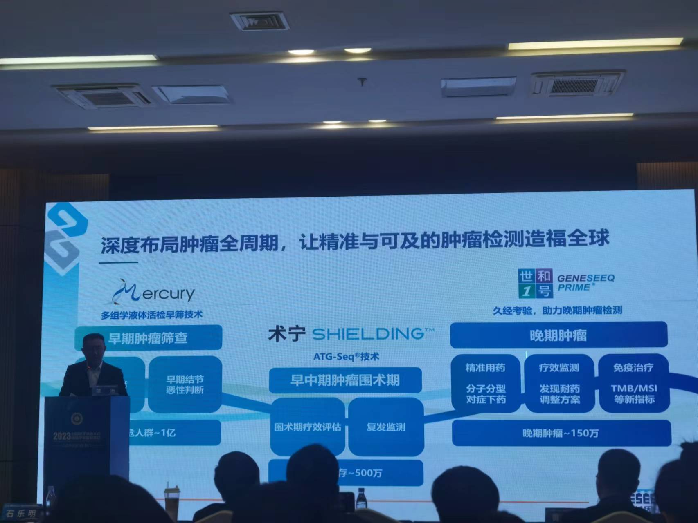

个人总结
- 对个体化panel与固定panel的优劣，做了全面而深入的分析
- 采用固定化的大panel来做MRD，克服了定制panel的一些问题，想的很细致，做得很坚定，效果也不错
- 复发病人阳性率似乎还是没有定制panel高
- 在复发风险预测方面，片段组学看起来效果比ctDNA突变要好


MRD检测的本质：在于判断患者是否治愈

MRD检测主要有两大技术策略
- Tumor-informed assay -> 个体化panel
- Tumor naive/agnostic assay -> 固定化panel

如何评估MRD检测技术路线的优劣势对比
| 技术指标 | 核心点 | 个体化panel | 固定化panel |
|---|---|---|---|
| 1. 单一突变检测灵敏度：固定化 = 个体化 | 降噪技术、超高测序深度、克隆性造血、采血量 | 超高测序深度结合UMI技术提高单点检测灵敏度，无克隆性造血影响 | 超高深度测序结合多重技术提高单点检测灵敏度，存在一定的克隆性造血干扰 |
| 2. 监测突变数量：个体化>固定化 | 监测的突变数量越多，灵敏度也会越高，多少数量足够？ | 由方法学设定，常见的个体化panel监测MRD选择16个或更多的突变 | 固定panel：如世和泛实体瘤MRD panel，panel的设置至关重要 |
| 3. 检测突变质量：固定化 > 个体化 | 监测的突变是否与肿瘤相关？是否是主克隆突变？能否在最短的时间内筛选出需检测的基因？ | 先进行WES，再针对性设计基因检测的个体化panel，短时间内无法进行很好的筛选 | 预先选择与癌种相关的基因或可特异选择尽量多的主克隆基因变异病设计为固定panel |
| 4. 检测过程质控：固定化>个体化 | NGS检测流程复杂，任何环节质控出现问题都会影响结果的可靠性、稳定性、准确(？)性 | 短周期内完成个体化探针的设计和临床检测，对追踪位点检测的质量控制带来了巨大挑战 | 固定化panel在临床推广前经过长周期严格的探针设计、流程优化和反复验证等工作，panel的性能相对稳定、可靠 |
| 5. 克服肿瘤时空异质性 | 肿瘤存在时空异质性，新发变异可能也与预后(?)相关 | 针对基线组织单次检测结果，无法克服时空异质性。 | 固定化panel检测范围更广，看一定程度上克服肿瘤时空异质性 |

单一突变灵敏度：取决于采血量和样本起始多样性

监测突变数量：个体化panel优于固定化panel

突变数量：突变数量增多，检测灵敏度提高，但有平台期。
理论LoD计算规则：
- 假设每个位点的有效测序深度为10000x
- 按照3条去dup后突变reads判断为阳性
- 根据二项分布去计算单个位点突变的LoD
- 进一步根据单位点突变LoD计算多位点LoD

监测突变数量达到10个左右，灵敏度进入平台期。进一步增加突变数量，灵敏度提升效果微乎其微。
(按：此处与Natera的研究不一致，Natera认为16个突变是必须的，突变数目超过16个之后，对性能提升有限)

突变质量：少数重要突变也具有MRD监测效果
某研究只关注15个重要的驱动基因

突变质量： Natera转战组织panel测序个性化MRD

检测质控：全流程质控与结果可信度密切相关
- 固定化panel，18-36周的研发周期，保证检测质量
- 探针合成：2周
- 探针用量及最适条件确认：4-8周
- 性能确认（精密度、LoD、准确性）：12-24周 （按：这里24周似乎太长）
- 临床应用：1周
- 个体化panel：研发检测周期短，无法保证检测质量

质控关键一：基因/位点覆盖的均一性
- 固定化panel探针均一度可控
- 每个区域多探针密集覆盖
- 每条探针单独合成及质控
- 探针库反复优化，不同区域探针比例反复优化 （按：似乎有点夸张，不同区域探针比例很难**反复**优化）
- 性能验证（精密度、LoD、准确性）
- 个性化panel引物均一度不可控
- 引物设计影响因素繁杂：引物长度、GC含量、自由能、特异性等等
- 个性化panel位点明确，引物设计空间有限，引物最终效能无法保证
- 不同因为扩增效率存在差异，引物间配比缺乏优化，缺乏性能验证评估

质控关键二：有效控制PCR随机错误的比例
- 固定化panel流程及QC
- 样本接收
- 核酸提取
- 文库构建（~8 cycles PCR）
- 文库富集（~4 cycles PCR）
- 上机测序（约30000x（？），有效深度6000-8000x）
- 个性化panel流程及QC
- 样本接收
- 核酸提取
- 文库构建（~11 cycles PCR）
- 巢式富集（双链各19 cycles PCR）
- 上机测序（~100000x，有效约6000-8000x（？））

时空异质性克服：固定化panel优于个体化panel

个体化panel vs 癌种固定化panel
| 技术指标 | 个体化panel技术 | 癌种固定化panel技术 |
|---|---|---|
| 灵敏度 | $\Delta \Delta \Delta$ | $\Delta \Delta \Delta$ |
| 特异性 | $\Delta \Delta \Delta$ | $\Delta \Delta$ |
| 稳定性/质量控制 | $\Delta$ | $\Delta \Delta \Delta$ |
| 检测周期 | $\Delta$ | $\Delta \Delta \Delta$ |
| 空间异质性 | $\times$ | $\surd$ |
| 时间异质性 | $\times$ | $\surd$ |
| 用药指导/科研意义 | $\times$ | $\surd$ |


不同技术如何选择？临床验证是检测技术验证的金标准

世和MRD策略：癌种定制化 + ATG-Seq高灵敏技术
-
定制化
-
ctDNA定制化热点突变追踪panel
- 针对不同癌种中国人群数据定制热点追踪
-
超高灵敏度： ATG-Seq超高灵敏度检测技术（ATG-Seq三重降噪技术，结合30000x测序深度）
-
ATG-Seq技术(Automated Triple Groom Sequencing) 降低背景噪音
- BISC技术噪音抛光
- BBAM标签去除PCR随机错误
- DDAM标签还原双链，去除单链损伤错误
-
30000x超高深度
-
-

检测性能提升：多重机制降低克隆性造血突变等干扰
去除克隆性造血影响的方法：
- WBC对照
- 基线组织数据
- 世和基因自建中国人群CH突变库
- 多次检测，综合评估
- 患者年龄辅助判断

世和MRD panel：基于大样本中国人群数据库富集高频位点
- 超万例WES数据库建设
- 世和临床WES数据
- 世和科研WES数据
- 公告数据库
- 主克隆突变筛选
- 生信利用FACETS分析WES测序突变结果
- 获得CCF（Cancer Cell Fraction），根据CCF>0.8选择主克隆突变
- 主克隆突变频率从搞到地排序，选择最高频突变位点纳入

世和MRD panel：全面覆盖基因组2365基因(>1M)

真实临床样本验证
- 中位17突变/患者
- 95%人群覆盖>=5个突变
- 77%患者覆盖>=10个突变

灵敏度验证：95%的样本LoD可达0.02%

临床验证：世和MRD多项大型临床研究获国际权威杂志认可

世和MRD肠癌临床验证：多中心肠癌术后动态检测项目

研究设计
时间点
- 术前，外周血
- 术后3-7天
- 术后6个月
- 术后9、12、15、18、21、24个月

术后、辅助治疗后或动态检测ctDNA阳性患者复发风险高

83%复发的患者ctDNA阳性，平均提前影像学153天提升复发
（按：复发的患者，只有83%的患者ctDNA阳性，还有17%的假阴性，够好吗？）

世和MRD肺癌临床验证新成果：揭示更优术后复发监测方案

主克隆性突变对于复发风险可能更有预测价值

MRD检测媒介：多种特征可以用于MRD监测
- ctDNA突变检测
- 甲基化检测
- CNV检测
- cfDNA片段大小检测：片段组学可为MRD提供更为丰富的xx特征
- Motif检测

MERCURY多组学技术用于肺癌术后复发风险预测
相比传统突变方法，片段组学预测复发风险具有更高的敏感性

片段组学可有效预测术后复发风险
使用术后7天和术后6个月的cfDNA片段大小比值(Fragment Size Ratio, FSR)

片段组学模型预测复发风险性能优于ctDNA突变

MRD前瞻性干预研究的设计思路

深度布局肿瘤全周期，让精准与可及的肿瘤检测造福全球
